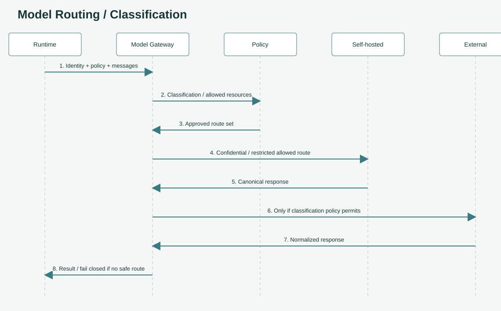

Agent Gateway
지금까지 서연의 요청 A에서 invoice-summary가 ERP에서 청구서 INV-2048을 읽어 왔습니다. 서연의 권한 안에서, 잠깐 쓰고 사라지는 출입증으로 읽었습니다. 이제 읽어 온 내용을 모델에게 주고 요약을 받을 차례입니다.
장면
요약을 만들려는 순간 회사 안 모델이 오류를 냅니다. 민준의 코드에는 재시도가 한 줄도 없는데 서연은 정상 응답을 받습니다. 모델로 가는 길목에 있는 관문이 대신 다시 시도한 덕분입니다. 관문은 그 전에 한 가지 일을 더 했는데, 청구서가 기밀이라 회사 밖 모델은 빼고 회사 안 모델로만 보냈습니다. 민준의 코드는 어느 모델로 갈지조차 정하지 않았습니다.
Agent Gateway가 없다면 Agent마다 재시도와 시간 제한을 제각각 넣고, 기밀 데이터가 어느 모델로 나가는지는 각 팀의 코드를 열어 봐야 압니다.
무슨 일이 일어나나
- 1. Agent가 모델에 묻는다ctx.generate(prompt)
- 2. 등급을 보고 모델을 고른다모델 경로 · 분류 기반 라우팅
- 3. 실패하면 관문이 다시 시도한다최대 3회
- 4. 계속 실패하면 잠시 문을 닫는다차단기 · 호출 한도
실물 보기
Agent 코드에서 모델을 부르는 한 줄입니다. 로컬 예제 examples/agents/invoice-summary/agent.py의 실제 코드입니다.
실행 결과 · 내 PC의 로컬 mock
summary = ctx.generate("Summarize the invoice: " + found)
- 모델 이름도, 주소도, 재시도도, 시간 제한도 없습니다. 관문이 이 호출에 호출자의 신원, 정책 결정, 남은 시간을 붙여 모델 경로로 보냅니다.
- 어느 모델로 갔는지는 응답의
routeDecisionId에 남습니다. 요청 A는route-self-hosted, 곧 회사 안 모델입니다.
모델 쪽에 문제가 있을 때 서연의 앱이 받는 응답과 그때 할 일입니다. 참조 구현(impl/)의 실제 값입니다.
실행 결과 · 앱이 받은 응답
| 앱이 받은 응답 | 이 값만으로 알 수 있는 것 | 할 일 |
|---|---|---|
429 RATE_LIMITED, Retry-After 있음 |
초당 호출 한도를 넘음 | 그 시간만큼 기다렸다 다시 |
503 UPSTREAM_UNAVAILABLE, Retry-After: 1 있음 |
차단기가 열림 | 그 시간만큼 기다렸다 다시 |
503 UPSTREAM_UNAVAILABLE, Retry-After 없음 |
모델 쪽으로 가지 못했다는 것까지만 | 잠시 뒤 한 번만 다시. 또 같으면 호출 번호로 운영자에게 확인 |
502 UPSTREAM_ERROR |
관문이 3회 시도했지만 모델이 오류 | 사용자에게 알림 |
504 UPSTREAM_TIMEOUT |
남은 시간 안에 답이 없음 | 사용자에게 알림. 시간을 늘릴지 검토 |
- 본문의
detail은Model upstream failed로 같습니다. 앱은 상태 코드와code,Retry-After로 판단합니다. - 셋째 줄이 중요합니다. 연결 실패와 "이 데이터 등급으로 갈 수 있는 모델이 없음"이 앱에는 같은 응답으로 옵니다. 응답 본문만으로 원인을 가릴 수 없으므로 계속 다시 보내지 않습니다.
직접 해 보기
- 모델이 한 번만 실패하면 서연은 무엇을 보나요.
- 앱이
Retry-After없는 503을 받았습니다. 이 값만으로 무엇을 결정할 수 있나요. - 실패가 이어진 뒤 다시 보내면 무엇이 달라지나요. "Agent 코드에 재시도"를 켜고 다시 보세요.
더 해 보기: 데이터 등급에 따라 모델 고르기
- 분류를
confidential로 두고 자체 호스팅 모델을 끄면 어디로 가나요. - 호출자가 분류를 낮춰 적으면 어떻게 되나요.
public · internalconfidential · restricted→
→

잘못되면
모델 응답이 늦으면 서연의 요청 A는 남은 시간이 지나는 순간 504 UPSTREAM_TIMEOUT을 받습니다. 시간 초과는 다시 해도 남은 시간이 없으므로 관문이 다시 시도하지 않습니다. 앱이 요청에 준 시간(timeoutMs)이 관문이 기다리는 한도가 됩니다. 사용자에게 "지금은 요약을 만들 수 없다"고 알리고, 자주 일어나면 시간을 늘릴지 검토합니다.
모델이 계속 죽어 있는데 요청이 계속 들어오면 요청 3건이 연속으로 실패한 뒤 차단기가 열립니다. 그 뒤 1초 동안은 모델을 두드리지 않고 바로 503과 Retry-After: 1을 돌려줍니다. 1초 뒤 시험 호출 하나가 성공하면 차단기가 닫히고 요청을 다시 모델로 보냅니다. 앱은 Retry-After만큼 기다렸다 다시 보냅니다.
더 보기: 갈 모델이 없을 때, 분류를 낮춰 적을 때, 재시도를 직접 넣을 때
기밀 데이터인데 쓸 수 있는 모델이 외부 모델뿐이면 관문은 외부로 돌아가지 않고 503으로 실패시킵니다. 모델 경로를 직접 호출해 보면 이유가 구분되어 보입니다.
실행 결과 · 내부 진단 · 내부 경로를 직접 호출한 값
{"status": 503, "code": "UPSTREAM_UNAVAILABLE", "detail": "No policy-approved model route"}
참조 구현 S1 confidential-external-only의 값입니다. 이 문구는 앱까지 전해지지 않고 Model upstream failed로 바뀝니다. 그래서 앱 개발자는 위 표의 셋째 줄처럼 다룹니다.
호출자가 요청에 분류를 낮춰 적어도 관문은 플랫폼이 아는 분류와 비교해 더 높은 쪽을 씁니다. 높여 적는 것은 받아들이고 낮춰 적는 것은 무시합니다(적합성 C7, 참조 구현 S1 downgrade-classification).
1초에 5회를 넘겨 부르면 여섯 번째 요청부터 429 RATE_LIMITED와 Retry-After를 받습니다. 한도는 테넌트와 Agent별입니다.
민준이 Agent 코드에 재시도 3회를 직접 넣으면 관문의 재시도 3회와 곱해져 모델을 최대 9번 두드립니다. 아픈 모델을 더 아프게 하고 서연은 더 오래 기다립니다. 모델 호출의 재시도는 관문에 맡깁니다.
내가 할 일
- 모델 호출에 재시도를 직접 넣지 않습니다.
ctx.generate만 부릅니다. - 앱은 요청에 남은 시간(
execution.timeoutMs)을 줍니다. - 앱은 위 표대로 응답을 처리합니다.
Retry-After가 있으면 그만큼 기다리고, 없으면 계속 다시 보내지 않습니다. - 문의할 때는 호출 번호(
invocationId)를 함께 전달합니다.
내 PC에서 해 보기 ZIP만 받았어도 되는 것은 둘입니다. 응답의 routeDecisionId가 route-self-hosted인지 보는 것(Agent Tools의 응답)과, 적합성 C7입니다.
실행 결과 · 내 PC의 로컬 mock
PASS C7 platform-enforcement Classification downgrade caller cannot downgrade classification; external route unused
저장소가 있으면 make scenarios의 S2, S3, S4 줄에서 위 표의 응답을 하나씩 확인합니다(PostgreSQL이 필요합니다).
제공 범위 (v0.1)
| 항목 | 등급 | 확인하는 곳 |
|---|---|---|
| 분류 기반 모델 경로 선택, 낮춘 분류 무시 | 실행 | 로컬 mock, 적합성 C7 |
| 시간 초과, 재시도, 차단기, 호출 한도 | 실행 | 참조 구현 S2·S3·S4 |
| 토큰·비용 한도와 비용 귀속 | 정의 | 수치는 회사 결정(TBD) |
규칙으로 정리
- 모델과 도구로 나가는 호출은 모두 Agent Gateway를 지납니다. Agent가 모델 공급사를 직접 부르지 않습니다(MUST NOT). 장면 ⑥
- 모델 경로는 데이터 분류와 정책으로 정합니다. 허용된 경로가 없으면 우회하지 않고 실패시킵니다(MUST, fail closed). 장면 ⑥
- 호출자가 적은 분류는 주장일 뿐입니다. 높일 수는 있어도 낮출 수는 없습니다(MUST).
- 라우팅 결정은
routeDecisionId로 기록합니다(MUST). - 관문은 모든 호출이 지나는 길목이므로 시간 제한, 재시도, 차단기, 호출 한도를 스스로 갖습니다.
한 문장으로
모델로 가는 길목에서 어느 모델로 보낼지 정하고, 모델이 아플 때 대신 버팁니다.
이해 점검
Q1. 앱이 503과 Model upstream failed를 받았고 Retry-After가 없습니다. 이 값만으로 어떤 조치를 정할 수 있나요?
잠시 뒤 한 번만 다시 보내는 것까지 정할 수 있습니다. 연결 실패인지 이 등급으로 갈 모델이 없는 것인지는 이 응답으로 가릴 수 없으므로, 또 같으면 호출 번호로 운영자에게 확인합니다.
Q2. 민준의 코드에 재시도가 없는데 모델이 한 번 실패한 요청이 성공했습니다. 누가 무엇을 했나요?
Agent Gateway의 모델 경로가 남은 시간 안에서 다시 시도했습니다. 서연의 앱은 200 하나만 받습니다.
Q3. 기밀 청구서를 다루는 요청인데 회사 안 모델이 내려가 있고 외부 모델은 살아 있습니다. 어떻게 되나요?
요청이 실패합니다. 기밀 데이터는 외부 모델로 보낼 수 없고, 관문은 다른 길로 돌아가지 않습니다.
근거와 참고 자료
- 관문 구조: Gateway 패턴
다음 장면은 ⑦입니다. 서연이 요약을 부탁한 청구서 비고란에 누군가 지시문을 숨겨 놓았습니다.